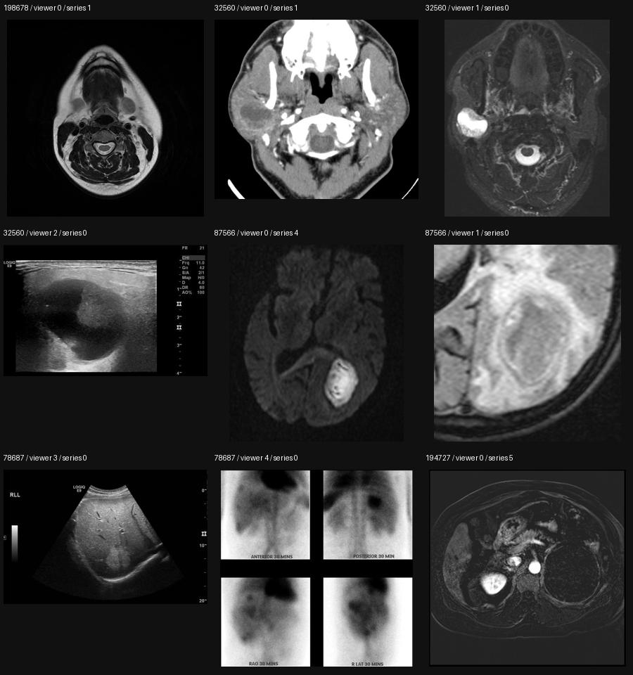

Learning expert diagnostic reasoning from Radiopaedia cases
The original audit below remains useful, but its emphasis on evidence sufficiency is only part of the broader reasoning opportunity. The new detailed literature assessment evaluates the proposed direction, compares general-domain and medical precedents, specifies an episodic adaptation objective, and outlines later Lingshu experiments. No inference or training has been run.
Dataset correction: we cannot assume Radiopaedia mainly contains difficult questions. Its contribution guide also welcomes clear common cases. The local extract contains retrospective teaching discussions, not structured conversations among doctors. A new summary of the existing audit finds a median of 264 characters per nonempty discussion, including headings, and 9,647 QA pairs across 4,593 cases. See the reproducible measurements.
Research priority: compare verified reasoning supervision with answer-only and generic-rationale supervision, while separately testing easy and informative-hard case selection. Specialist adapters and medical reasoning training have close predecessors. Meta-learning becomes a stronger contribution only if it improves adaptation to held-out diagnostic families beyond a shared model given the same examples.
核心缺口是：模型的结论粒度、置信度和依据，缺少与当前可用患者证据相匹配的监督。 The useful research claim is that explicit supervision of this relationship can improve reliability per clinician-hour. That remains a hypothesis to test, not a demonstrated result of this audit.
I read the supplied dossier, completed a census of 86,288 metadata files across the four download folders, inventoried images in a deterministic sample of 512 base-case folders and 128 additional-folder records, checked bounded image hashes and decoding, examined nine selected case records, and visually inspected nine representative frames. I checked primary literature behind the central claims and added relevant dataset and judge baselines. No MLLM inference, training, clinician adjudication, or clinical outcome study was performed.
1. The evidence-state gap underlying the proposed reasoning study
One defensible gap is an inadequately specified relationship between the evidence supplied to the model and the claims rewarded by training and evaluation. Many examples provide an image or selected series while the target was written with access to the eventual diagnosis, a broader examination, pathology, or retrospective discussion. A plausible explanation of that target can receive credit without establishing which of its premises the model could actually observe.
This has three distinguishable layers: perception—recovering findings from the supplied pixels; inference—using those findings and appropriately scoped knowledge; and evidence sufficiency—choosing a useful conclusion at a defensible level of specificity. A model may fail at any layer. Missing evidence cannot be repaired by longer reasoning. Conversely, an image encoder that misses a visible lesion needs better perception, not merely stronger language about uncertainty.
Y = eventual outcome or diagnosis; C = proposed claim; T = clinical task
Learn: p(Y | E), and assess support(C | E, T)
Do not silently substitute support(C | E, U, T) when evaluating an E-only response.
A necessary qualification: training on an eventual diagnosis is not inherently statistically wrong. With appropriate sampling, probabilistic cross-entropy can learn p(Y | E) even when E is ambiguous. The problematic step is treating the realized label as a uniquely established conclusion, rewarding unjustified certainty, or inventing a visually grounded rationale for information unavailable in E. A correct probabilistic prediction can be justified without a deterministic proof. Sufficiency is relative to the claim and task: evidence can support a lesion family while failing to establish a histologic subtype.
This interpretation sharpens the dossier rather than replacing it. It does not establish one universal cause of all medical MLLM failures. Visual resolution, sequence coverage, distribution shift, inadequate representations, and missing knowledge remain real competing explanations. The proposed experiment must separate them.
2. What existing model and data designs already accomplish
| Approach / primary source | Supervision or architecture | Implication for this project |
|---|---|---|
| LLaVA-Med; RadFM | LLaVA-Med generates conversations from captions and surrounding article context. RadFM accommodates 2D/3D inputs and uses large radiology corpora including Radiopaedia-derived data. | These designs build useful visual-language competence. Caption/context-derived targets still need an availability audit. Reusing Radiopaedia and making more image–answer pairs would have limited novelty. RadFM also makes public-case contamination a concrete concern. |
| Dr-LLaVA, 2024 preprint | Expert pathways govern bone-marrow dialogues, including quality and inconclusive states. Removing correctness reward changes single-turn accuracy from 89.6 to 32.4 while the invalid-path metric improves from 22.5 to 1.5 (Table C.5). | This directly demonstrates that symbolic consistency and correct image-conditioned answers can diverge. Keep premise verification and rule consistency separate. |
| ChestX-Reasoner, Communications Medicine 2026 | Report-derived reasoning and process factuality reward. Both construction and reward explicitly treat absent report mentions of findings as normal/no disease under a reporting assumption. | This is a design assumption, not a measured universal error rate. Our labels should distinguish explicitly absent, uncertain, unassessable, and simply unmentioned findings. |
| Med-PRM, EMNLP 2025; FaithMed, 2026 preprint | Med-PRM supplies guideline-verified process rewards for text reasoning. FaithMed develops evidence-based-medicine rubrics and step-level training for a text search agent. | Generic process supervision, evidence rubrics, and better step credit assignment already have precedents. Textual medical validity does not independently establish an image-derived premise. |
| Act as You Think / MCR, ACL 2026; Med-OPD, 2026 preprint | These use consistency and image-conditioned signals. Med-OPD weights teacher distillation using original versus heavily downsampled images with an answer-aware teacher prompt. | Image sensitivity is meaningful, but broad corruption does not isolate a particular medically discriminating observation. Compare natural sequence availability with irrelevant changes and retained alternative evidence. |
| MedGuideX; MMedExpert-R1, 2026 preprints | MedGuideX converts guidelines into executable logic and trains on factual/counterfactual cases. MMedExpert-R1 uses specialty adaptation, several reasoning paradigms, and guideline-based advantages. | An executable rule does not establish that every required input is visible. General reasoning paradigms are also different from patient-specific clinical rule applicability. Audit both before importing their rewards. |
| MedCBR, 2026 preprint | The written graph predicts diagnosis q(h) and concepts g(h) from shared image features, then explains using diagnosis, concepts, and guidelines. | The diagnosis is not forced through the displayed concept vector. An explanation should not be presented as proof of causal mediation; test interventions explicitly. |
| MRPO, 2026 preprint | A judge scores steps by gold alignment or contribution toward the answer; step-aware RL emphasizes early failures. Appendix H.2 scores inability to determine the answer as noncontributive. | This fits its answerable VQA setting. Extending it to partial evidence needs adjudicated uncertainty targets and tests where a correct final label accompanies an invalid premise. |
| MedAgent-Pro; MedTRACE, preprints | Guideline planning, specialist tools, and evidence management already exist. MedTRACE explicitly models sufficiency, acquisition, support/contradiction, and calibration. | MedTRACE is a close conceptual predecessor. Its unsupported-error definition requires an incorrect diagnosis; the proposed endpoint also counts unsupported consequential claims when the diagnosis is correct. Match tools and evidence budgets in comparisons. |
| GEMeX, ICCV 2025; Spatial/factual CXR RL, 2026 preprint | GEMeX provides visual and textual answer explanations. The CXR RL work gates factual reward on spatial overlap, using an IoU threshold of 0.25. | Grounded explanations and gated rewards are established ideas. The opportunity is adjudicated boundaries across available evidence states and transfer, not adding a bounding box or reward gate. |
| Med-RewardBench, 2025 preprint; PSF-Med, 2026 preprint | Med-RewardBench evaluates judges on 1,026 expert-annotated cases. PSF-Med separately tests paraphrase robustness and reliance on visual input. | Validate the verifier against independent experts. Stable wording alone is insufficient; a model can remain stable while ignoring images. Include text-only, image-swap, and clinically meaningful evidence controls. |
Candidate contribution: source-audited radiology cases with independently adjudicated claims at several information states, including correct answer / false premise and reported but undisplayed evidence, followed by a matched demonstration of annotation-efficient transfer. This is a proposed contribution; a focused novelty review must be refreshed before submission. MedThinkVQA full text was inaccessible during the original audit but was retrieved for the 16 October follow-up; its overlap further narrows the novelty claim.
3. What is actually saved
| Finding | Measured result | Interpretation |
|---|---|---|
| Metadata census | 64,160 cases; 17,213 articles; 2,116 cases_new; 2,799 articles_new. All 86,288 data.json files parsed. | The actual article folder is plural. Unique IDs total 64,160 cases and 17,213 articles, not the sum of both downloads. |
| Additional folders | Every _new ID exists in its base folder; every overlapping data.json is byte-identical. All 64 image files checked across 32 sampled re-download cases also match the base copy. | Do not count these as independent examples or put copies in different splits. The image check is bounded and does not prove all images match; preserve versions until reconciled. |
| Case text | 58,491 nonempty discussions (91.2%); 57,749 nonempty presentations (90.0%); 58,938 patient-data fields (91.9%); 60,890 related-article lists (94.9%); 4,593 existing QA lists (7.2%). | Useful context exists at scale. Nonempty fields are not a clinical-quality assessment. Existing questions may be general knowledge rather than image-dependent. |
| Author certainty | Certain 33,797; almost certain 20,723; probable 4,459; possible 519; not applicable 4,130; missing 532. | These are case-author labels, not validated probabilities or image-only answerability. Some normal/technique cases have no diagnosis to confirm. |
| Candidate mining | 6,649 discussions mention confirmation-related words; 4,460 mention uncertainty/differentials; 983 mention both; 3,100 mention follow-up-related terms. | Lexical retrieval flags only. They do not establish patient-specific confirmation, useful ambiguity, chronology, or clinical eligibility. |
| Article material | 17,213 have nonempty text; 16,017 references; 6,029 imaging-feature heading matches; 3,368 differential-diagnosis heading matches; 1,525 nonempty structured differential fields. | Good raw material for scoped imaging knowledge and alternatives. Much is anatomy, signs, technique, or classifications. Do not call all 17,213 documents clinical practice guidelines. |
| Case–article connections | 138,988 links matched to a unique normalized local article title, covering 58,403 cases (91.0%). | Candidate graph edges, not validated canonical URL joins or clinical applicability. Case links often expose the answer and must stay out of blinded model inputs. |
| Base image sample | 512 random base cases: 509 have recognized image/video files; 81,057 files totaling 5.61 GB; median 49 files per case, range 0–2,695. 153 have multiple viewers. | Substantial multi-series material exists. These are sample measurements, not a whole-corpus size estimate. The three without recognized assets need review. |
| Formats and integrity | Sample contains 80,799 JPG, 251 PNG, 7 MP4. First two sorted assets per case: 1,018 successful image verifications, zero failures. Common sampled dimensions are 512×512 and 630×630. | Rendered stacks can support series reasoning. The audit found no DICOM files in this sample and did not establish native geometry, quantitative intensities, complete acquisitions, or MP4 playback integrity. |
| Duplicate frames | 328/512 sampled cases have an exact duplicate among at most the first 12 sorted assets. There were 4,827 hashes checked. Normal thumb case 37511 has six files representing three unique images. | This is a bounded, filename-biased duplicate check, not an estimate of the fraction of all images duplicated. Use hashes with provenance; do not delete frames by filename suffix. |
| Viewer text repetition | 151/153 sampled multi-viewer cases repeat nonempty text across viewers; 121 repeat it across different modality labels. | Repeated text can be a case summary, not a study-specific caption. Repetition does not prove every pairing wrong. The specific mismatch in case 78687 demonstrates that blind pairing is unsafe. |
| Article figure availability | 10,670 articles list figure entries. A separate deterministic sample of 256 article directories contained only data.json. | Remote figure URLs are not evidence of downloaded article pixels. Use cases for local images until article asset coverage is separately established. |
The main sample was drawn uniformly over sorted case-directory IDs with seed 20261015. The 128-record cases_new sample is a separate download-quality check and is not pooled as independent patient evidence. No full image-tree census or whole-corpus image hash pass was attempted. Metadata contains no explicit evidence-state gold labels, lesion masks, or spatial finding annotations in its observed schema; some image files are annotated or illustrated, which is a separate resource requiring review.
4. Concrete examples that change the research assessment
| Local case | Observed source facts | Proposed use and boundary |
|---|---|---|
| 198678 · Parotid acinic cell carcinoma | Ten MRI series titles; 454 image files. Discussion explicitly retains a broad salivary-neoplasm differential on MRI and identifies excision histology as definitive confirmation. Metadata certainty nevertheless says “almost certain.” | The dossier's example is genuinely present locally. Compare image/history evidence with a later reveal of the source histology statement. Keep finding claims stable while allowing greater diagnostic specificity. Author certainty is not a substitute for confirmation provenance. |
| 32560 · Parotid mass | CT, MRI, and ultrasound viewers; 108 files. Discussion says imaging still left several diagnoses plausible before core biopsy. Its existing QA asks the most common malignant parotid tumor, rather than identifying this patient's lesion. | More views need not establish exact histology. This supplies a useful comparison between better characterization and definitive confirmation. Exclude biopsy-procedure images from pre-biopsy states. The QA illustrates why existing QA count is not usable image-QA count. |
| 194727 · Adrenal hematoma | Six MRI series titles. Viewer text refers to lack of signal dropout on opposed-phase sequences and explicitly says those sequences are not shown. Discussion supplies later pathology. | Especially useful for testing provenance: “visible in these images,” “reported elsewhere,” and “not assessable from these images” are different labels. Even a clinically correct caption can supervise an unsupported visual assertion. |
| 87566 · Brain abscess | MRI series include DWI and ADC; an additional annotated-image viewer exists. Discussion mentions histopathology to explain the sign generally, without establishing patient-specific histological confirmation. | Withhold and restore DWI/ADC to test diffusion claims. Other retained features may already support abscess, so do not require a diagnosis flip. This is also a concrete false positive for the confirmation keyword screen. |
| 33598 · Tuberculous brain abscess | Seven MRI series titles. The case narrative describes competing interpretations, subsequent tissue evaluation, and microbiology identifying the organism. | Useful for distinguishing lesion description from etiologic specificity. Some discussion wording is ambiguous; retain source provenance and obtain adjudication instead of copying the prose as an ideal reasoning trace. |
| 78687 · Glioblastoma case with other studies | The same brain MRI narrative appears under all six viewers. The inspected ultrasound image is abdominal, and the nuclear-medicine image is also non-brain imaging. | A demonstrated caption-to-view mismatch. Store this text as an unaligned case-level source pending repair. The local artifact cannot establish whether the cause was scraping or source-page structure. |
| 45969 · Pleomorphic adenoma | Its only viewer is gross pathology and histology. | A title-related confirmed diagnosis is not automatically a matched radiologic contrast for parotid MRI. Modality and evidence availability must enter eligibility checks. |
| 37511 · Normal thumb series | Three radiographic views; source description reports no abnormality. | Candidate answerable control against learning universal abstention. Clinicians still need to define the specific findings assessable from these views. |
Relevant local articles also exist: 9149, salivary acinic cell carcinoma, explicitly discusses nonspecific imaging and overlapping tumors; 6679, ring-enhancing cerebral lesions, describes multiple diagnostic considerations and qualified imaging heuristics. These texts can provide candidate rules about the limits of imaging. They do not supply patient-specific probabilities or automatically adjudicated gold findings.
Representative frames inspected for format and pairing

5. How to use the cases and articles
Use the large corpus for coverage and selection; spend expert effort on a small set of contrasts. The corpus supplies candidate lesions, normal examples, views, sequences, descriptions, confirmation statements, and knowledge links. Expert annotations should add what it currently lacks: which claims are warranted from a defined subset of that material.
| Data tier | What can be done now | What must be added |
|---|---|---|
| Searchable source inventory | Stable case IDs, version hashes, image inventory, lexical candidate search, article-title matches. | Source URL/alias reconciliation, study-caption alignment, cross-case near-duplicate checks, and reliable series mapping. |
| Weak supervision | Source-derived candidate findings and evidence rules, mined alternatives, modality-specific retrieval. | Explicit confidence in alignment and provenance; withhold unaligned text from image-grounding objectives. Keep weak targets separate from clinician gold. |
| Small expert dataset | Blinded images/history, staged reveals of actual existing series or source confirmation. | Evidence pointers, finding status, permitted specificity, acceptable alternatives, uncertainty, expected revision, and disagreement records. |
The source unit should remain a case → viewer → series → frame hierarchy. A single frame often cannot support the full examination narrative. Record whether a statement is supported by displayed pixels, supplied history, a supplied report, a confirmation statement, or general knowledge. Never convert “not mentioned” into “absent.” Avoid labeling a selected image stack as a complete clinical acquisition unless completeness is established.
Build a compact observable output record: finding, status, evidence pointer, supported differential, warranted specificity, unresolved information, and next relevant evidence if available. This is an audit artifact rather than a claim to reveal hidden cognition. For visual grounding, have reviewers annotate representative locations or frames; the raw collection does not already contain reliable dense localization labels.
Articles should supply conditional knowledge: finding pattern, modality, anatomy, patient context, possible interpretations, exceptions, and what would distinguish them. Keep probabilistic heuristics separate from formal decision rules. For example, a feature that favors abscess must not be compiled into a deterministic abscess label. Retrieve from a fixed article corpus using only permitted query evidence, not the case's answer-bearing article links. Hide case galleries and links back to the test case. Separate held-out-patient testing from stricter held-out-disease or rule-family testing, whose retrieval exposure must also be declared.
Blinded annotation comes first. Reviewers initially see only the designated images and allowed history, without diagnosis, certainty, article links, discussions, or answer-bearing overlays. They record findings and defensible conclusions. A separate pass reveals confirmation and identifies what it changes. At least two reviewers should independently label critical test cases, followed by adjudication. Preserve real disagreement; a unique final label does not make the earlier interpretation uniquely identifiable.
The most valuable preference pairs keep the final answer fixed while changing the justification, or keep the evidence fixed while changing specificity. Include a grounded diagnosis versus the same diagnosis with a fabricated decisive finding; an appropriate differential versus unearned certainty; a supported negative versus an unavailable assessment; and correctly attributed report evidence versus a false claim to have seen it in pixels. Match response length and style so the judge cannot win by detecting superficial wording.
Start with a competent existing multi-image model. Compare ordinary answer SFT, structured evidence-record SFT, and targeted preferences under matched evidence and compute. Use image/sequence identity and modality explicitly. First assess a verifier's false acceptance of unsupported claims using independent clinician labels; then consider process RL. A learned reward can amplify its own systematic mistakes. A hard concept bottleneck is not required: if used, allow uncertainty and incomplete concepts, and test the information it discards.
6. A decisive experiment, including a few-sample version
First measure where the failure is. On the same cases, compare (a) actual images/history, (b) independently verified visual findings with the same history, (c) the same evidence plus scoped article material, and (d) relevant additional evidence. Condition (b) is a diagnostic intervention, not a fair end-to-end leaderboard baseline: it adds expert perception. If it resolves most errors, prioritize the visual representation or image selection. If errors remain with correct findings, inference or sufficiency supervision has a clearer target. Use text-only and image-swap controls only where the image is expected to matter.
| Stage | Concrete design | What it can establish |
|---|---|---|
| Feasibility / few-shot | Review 8 demonstration cases and 24 separate evaluation cases across two coherent tasks; create 2–4 valid states per case. Compare zero-shot, a concise evidence-use instruction, ordinary diagnosis demonstrations, and evidence-state demonstrations. Match context length; use several demonstration selections. | Whether a few examples change behavior on untouched cases. An in-context improvement is not learned weight transfer or evidence that a few cases suffice for medical competence. The 24-case test will have wide uncertainty. |
| Annotation-efficiency pilot | After eligibility review, target about 300 base cases: 128 train, 32 development, 140 untouched test. Nested training sets of 8/32/128 cases; paired annotation types and the same backbone, image inputs, optimizer budget, and inference budget. | Separates the supervision-target effect from more cases or a stronger model. Compare clinician-minutes and target tokens, not only QA counts. These are feasibility sizes, not a power calculation. |
| Transfer | Reserve lesion subtypes, finding combinations, or a second task family. Later test nonpublic institutional cases with appropriate access. | Whether evidence-use behavior transfers beyond memorized diagnoses and Radiopaedia style. Public-case holdouts alone cannot exclude foundation-model memorization. |
The current lexical pools contain 185 parotid-title cases (50 confirmation mentions), 442 selected intracranial-lesion-title cases (192), and 253 adrenal-title cases (40). These are candidate counts, not confirmed eligible cohorts. Start with parotid histologic specificity and MRI sequence availability; use intracranial lesions for a second family and adrenal cases for provenance stress tests. Do not force the 300-case design if the reviewed pool does not support it.
Primary endpoint: the proportion of evaluated base cases containing at least one unsupported clinically consequential claim, judged only against the evidence supplied in the scored state. Predefine severity and aggregate state results per base case so cases with more variants do not dominate. Count these failures even when the eventual diagnosis is correct. Report accuracy on answerable questions, informative coverage, and appropriate partial conclusions alongside the endpoint; compare risk–coverage curves so blanket abstention cannot win.
Evidence intervention endpoints: change in validity of the specific affected claim; appropriate revision after a relevant reveal; stability after an irrelevant reveal; and failure to distinguish absent from unassessable. Do not require confidence to increase after every reveal: new evidence can contradict the leading diagnosis. Do not require removal of one sequence to change the diagnosis when other sequences retain sufficient support. Evaluate calibrated probabilities only against a clearly defined outcome and sampling distribution; expert agreement scores and verbal confidence are not substitutes for population calibration.
Baselines that matter: a concise instruction-only intervention; diagnosis-only and diagnosis-plus-rationale SFT on the same cases; article retrieval; a report-derived verifier; a spatial/factual verifier when gold localization permits; and a matched evidence-agent workflow. Add outcome RL and process RL only after the simpler data comparison. If exact prior implementations are unavailable, label adaptations as such rather than claiming reproduction.
Group all views, image copies, related publications, follow-ups, and patient-linked cases before splitting. Use image and text near-duplicate searches within the shortlisted cohorts and against known training corpora where accessible. Review presentation fields: some legitimately contain a known diagnosis (for example, case 100001 is follow-up of an already known tumor). Whether that is leakage depends on the task; blindly deleting all history would also change the clinical question.
Use paired case-level bootstrap intervals and predefine the main contrast; assess clinician agreement and disagreement categories. Log annotation time. At an assumed 20 minutes per case per reviewer, two reviews of 300 cases already require roughly 200 clinician-hours, before adjudication. That is an illustrative budget, not a measured estimate. Start with the small review to establish actual costs.
Stop or change direction if reviewers cannot agree on the intended boundary, selected frames lack the needed evidence, the effect is only generic hedging, gains disappear under independent judgment or held-out families, or a simple prompt/evidence-agent baseline already resolves the problem. If a few examples help only within a diagnosis family, report local adaptation rather than general clinical reasoning.
7. Concrete outputs and limitations
The original dossier and source dataset were left unchanged. The following local artifacts make the findings and proposed pilot inspectable:
- 16 October review: difficult cases, expert reasoning, and meta-learning; discussion and QA summary; summary reproduction script.
- Census and sampled-image summary; candidate-pool, linkage, and repeated-text results.
- Per-record metadata audit; image sample and selection IDs; per-case viewer repetition checks.
- 100 candidate rows across four topic pools; 138,988 candidate case–article title matches.
- Nine selected source case records and viewer descriptions; visually inspected original frame paths.
- Six draft case manifests, 14 information states, with source hashes, image inventories, explicit text availability, synthetic challenge statements, and review questions. Clinical gold fields are deliberately null. These drafts must not be used as adjudicated training labels.
- Reproduction scripts: metadata/image audit, candidate and pairing analysis, review-only state manifests.
python Plans/analyze_radiopaedia_audit.py
python Plans/build_radiopaedia_pilot.py
Clinical review must establish whether selected frames support the claims, not just whether source prose says they do. Full image completeness, hidden overlays, cross-case duplication, canonical link resolution, public pretraining contamination, and clinical generalization remain unmeasured. The collection is an educational selection rather than a routine-care cohort. Its 2025-era article snapshots are not automatically current practice guidance. Training/release permissions were not established by this local audit; the RadFM paper separately documents a Radiopaedia usage-approval route.
Updated decision: use a small, blinded annotation study to establish reliable diagnostic comparisons and evidence states, then test whether this supervision improves transferable reasoning. Measure case difficulty rather than assuming it; evaluate meta-learning only after simpler same-data baselines. The local examples support initial feasibility, while claims of improved reasoning or reliability require controlled experiments.